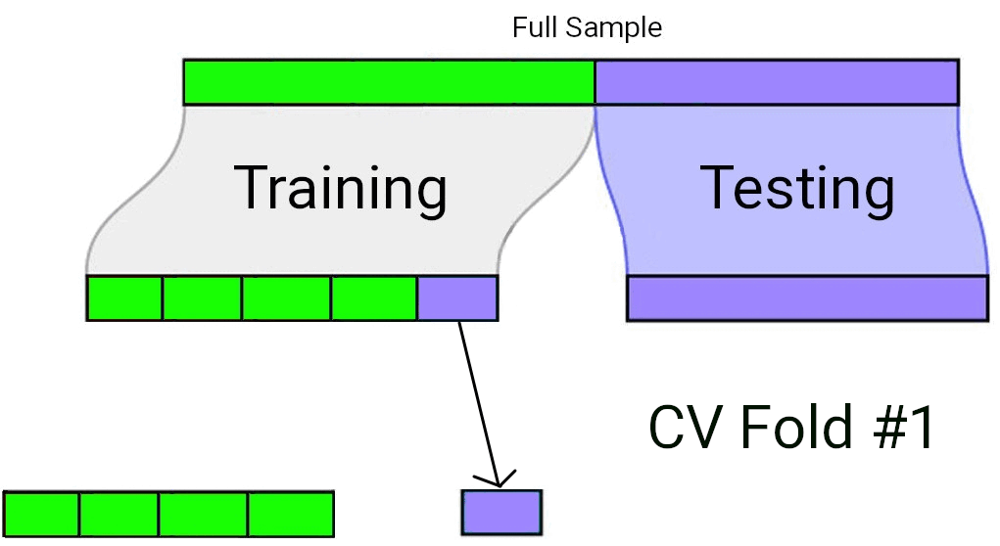
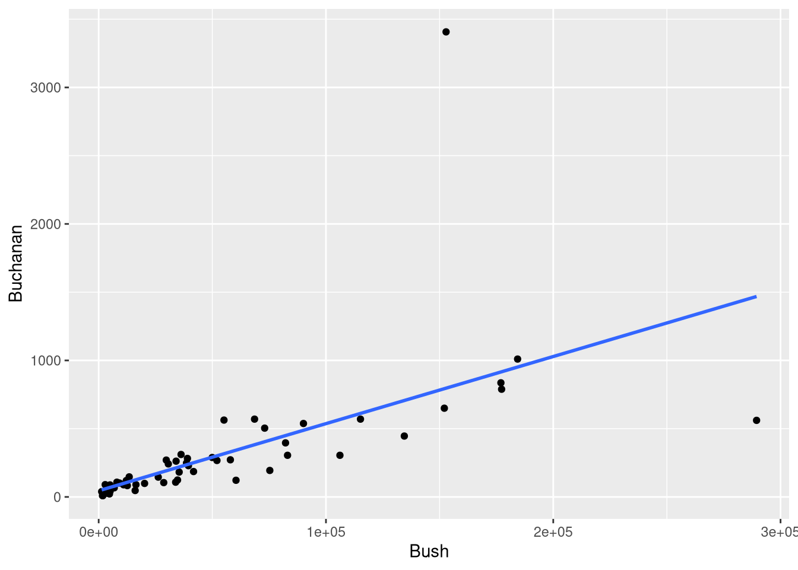
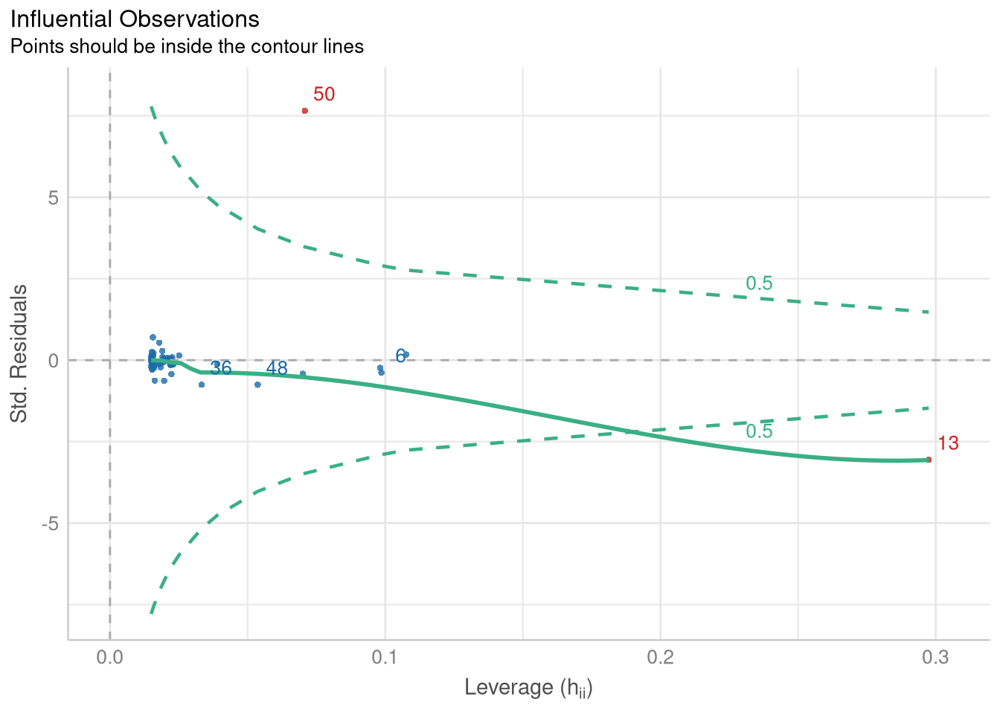
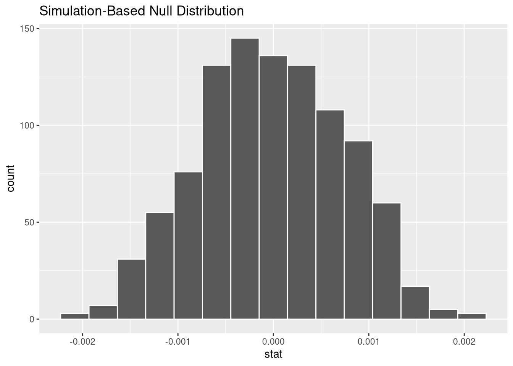
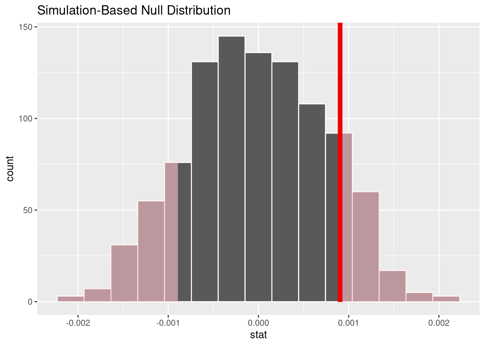
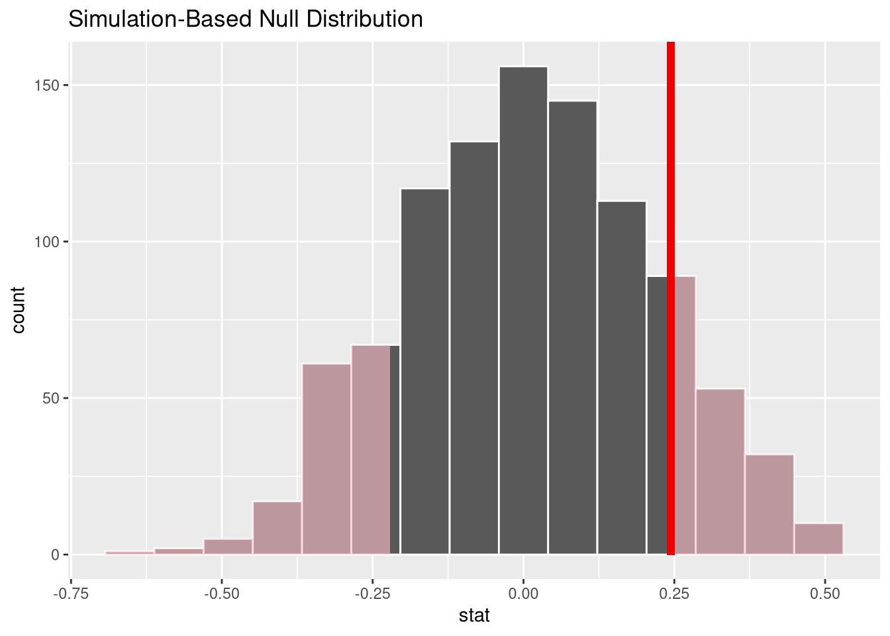

library(Stat2Data)
data("HousesNY")
HousesNYrows <- 1:nrow(HousesNY)
rows [1] 1 2 3 4 5 6 7 8 9 10 11 12 13 14 15 16 17 18 19 20 21 22 23 24 25
[26] 26 27 28 29 30 31 32 33 34 35 36 37 38 39 40 41 42 43 44 45 46 47 48 49 50
[51] 51 52 53Section 4.3 demonstrates cross-validation by dividing the HousesNY data set into two distinct subsets:
Price ~ Size regression modelTo replicate this test/training split, we first load the data, and generate a vector of row numbers based on the size of the data set
library(Stat2Data)
data("HousesNY")
HousesNYrows <- 1:nrow(HousesNY)
rows [1] 1 2 3 4 5 6 7 8 9 10 11 12 13 14 15 16 17 18 19 20 21 22 23 24 25
[26] 26 27 28 29 30 31 32 33 34 35 36 37 38 39 40 41 42 43 44 45 46 47 48 49 50
[51] 51 52 53Then, we sample two-third of these rows numbers; these sampled row numbers represent the rows that will become part of our “training” data set
set.seed(32419)
training_rows <- sample(rows, size = (2/3) * nrow(HousesNY))
training_rows [1] 18 9 3 51 31 25 33 2 37 22 41 29 50 4 40 47 38 13 1 39 32 23 15 17 24
[26] 8 19 43 35 28 34 5 10 7 26The row numbers that were not sampled represent the rows that will make up the “testing” data set. We can figure out which rows were not sampled by finding the difference between the set of all rows, and the set of sampled rows
test_rows <- setdiff(rows, training_rows)
test_rows [1] 6 11 12 14 16 20 21 27 30 36 42 44 45 46 48 49 52 53Finally, we can create the test/training split by subsetting the NYHouses data set using these row numbers to indicate which rows should be kept in each subset
training <- HousesNY[training_rows, ]
testing <- HousesNY[test_rows, ]Now we can fit the Price ~ Size regression model to the “training” data set, using lm as usual:
training_model <- lm(Price ~ Size, data = training)
summary(training_model)
Call:
lm(formula = Price ~ Size, data = training)
Residuals:
Min 1Q Median 3Q Max
-59.826 -27.477 1.146 31.444 75.024
Coefficients:
Estimate Std. Error t value Pr(>|t|)
(Intercept) 47.50 17.45 2.723 0.010268 *
Size 39.22 9.37 4.186 0.000198 ***
---
Signif. codes: 0 '***' 0.001 '**' 0.01 '*' 0.05 '.' 0.1 ' ' 1
Residual standard error: 35.86 on 33 degrees of freedom
Multiple R-squared: 0.3468, Adjusted R-squared: 0.327
F-statistic: 17.52 on 1 and 33 DF, p-value: 0.0001981anova(training_model)The model achieves an \(R^2\) of 0.3468, and a Mean Square Error of 1286.0237 when fit to the training data set. But how well do these fitted coefficients generalize to the testing data set?
We can compute the predicted price for each home in the “testing” data set by using the augment function from the broom package
library(broom)
test_predictions <- broom::augment(training_model, newdata = testing)
test_predictionsWe can compute the \(R^2\) statistic for our test data by squaring the correlation between the observed and predicted prices:
library(dplyr)
test_predictions |>
summarize(R2 = cor(Price, .fitted)^2)test_r2 <- test_predictions |>
summarize(R2 = cor(Price, .fitted)^2) |>
dplyr::pull(R2)And we can compute the \(MS_{Error}\) using the usual formula \(\frac{\sum{(y_i - \hat{y}_i)^2}}{n-k-1}\)
test_predictions |>
mutate(error = Price - .fitted,
sq_error = error^2
) |>
summarize(MSE = sum(sq_error)/(n() - 2))test_mse <- test_predictions |>
mutate(error = Price - .fitted,
sq_error = error^2
) |>
summarize(MSE = sum(sq_error)/(n() - 2)) |>
dplyr::pull(MSE)Our model performs much worse on the held out “testing” data set! \(R^2\) drops from 0.3468 to 0.0576 (a shrinkage of almost 30 percentage points!), and \(MS_{error}\) increases to 1479.6001. So it seems that the coefficients estimated based on the sample of 35 houses does not generalize particularly well to new houses.
Note that our results in this replication do not perfectly match the results in Section 4.3, because out training data differs; we have no way of knowing which 35 observations constituted the author’s training data, so we have no way of perfectly replicating their results. This highlights the importance of using set.seed() whenever utilize randomization in your R code; without setting (and sharing!) your RNG seed, your results won’t be replicable!
When using Cross-Validation as a model selection strategy, it’s uncommon to use a single test/train split. Rather, the “training” data set from the initial split is typically split again into \(v\) equally sized smaller subsets. One by one, each of these subsets plays the role of a held-out validation set (on which the model’s predictive accuracy is measured), while the model is fit to the data from all the remaining subsets. The processes of repeatedly fitting the model and assessing it on different, mutually exclusive subsets of the training data is known as \(v\)-fold cross validation1.

In \(v\)-fold cross validation, each candidate model is fit and “validated” (using a metric such as \(R^2\) or \(MS_{Error}\)) \(v\) different times. The model with the best performance on average across the \(v\) held-out validation sets is taken to be the preferred model. Finally, that preferred model is fit to the full training data set, and assessed against the “testing” data set that had been held out all along.
Let’s demonstrate this process by using \(v\)-fold cross validation to compare two models:
Price ~ BathsPrice ~ Baths + Lot + Beds + SizeNone of the individual Lot, Beds, or Size coefficients are “significant” when added to the model already containing Bath, but these are likely to be important confounders to adjust for when estimating the true effect of the number of bathrooms on price. So, we would like to use the larger model if we aren’t over-fitting the sample and reducing our ability to generalize the model to new homes.
To carry out the cross validation procedure, we’ll use the tidymodels package (Kuhn and Wickham 2020), which is an “umbrella” package for many different R packages all designed to enable a wide variety of modeling and machine-learning tasks in a systematic ‘pipeline’ by providing a common interface to all these disparate tasks.
library(tidymodels)Whenever one of the functions under the tidymodels umbrella is used, I will prefix that function using the name of the package it comes from, in order to emphasize that the tidymodels package is a collection, not a monolith.
To get started, we’ll creating a new test/train split for our HousesNY data set. This time, we’ll use an 80/20 train/test split (since we need to further subdivide the training data set, it helps to have a larger training set to start with).
set.seed(40)
HousesNY_split <- rsample::initial_split(
HousesNY,
prop = 0.80
)
HousesNY_train <- rsample::training(HousesNY_split)
HousesNY_test <- rsample::testing(HousesNY_split)Then, we’ll divide the HousesNY_train data into the separate training/validation splits using the vfold_cv function. In the parlance of machine learning, we’re using 3-fold cross validation:
HousesNY_3splits <- rsample::vfold_cv(HousesNY_train, v = 3, repeats = 100)
HousesNY_3splitsCross-validation is usually done with more “folds” (5-fold and 10-fold are common choices). But since our sample size is quite small (there are only 42 observations training data), we’ll keep the number of folds small so that we have a decent number of observations in each held-out validation set.
Since we have such a small sample, there is likely to be considerable variance in the fitted coefficients and accuracy on the held-out validation set across these three splits. To reduce the impact of this variability, we’ll repeat generate 100 different 3-way folds of the training data, and average accuracy across all 300 of the held-out validation sets.
Fitting a regression model within the tidymodels framework will feel quite different from how you’re used to fitting a regression model. At first, this will feel overly complicated for no reason. To some degree, it is! The tools of the tidymodels framework are designed to be highly modular and used with nearly any type of model. Since our use case is relatively simple in the grand scheme of things, it does seem to be a bit more trouble than it is worth. However, I feel it is worthwhile to introduce you to this framework (rather than “roll our own” \(v\)-fold cross validation) since it represents how cross validation is carried out “in the real world”, and because it’s easier to learn a new framework when the task at hand is relatively simple.
To fit a regression model via the tidymodels framework, we will need to build up three components:
Let’s start by building the first component we need, a recipe object. Our recipe is quite simple; it specifies our outcome and explanatory variables, and what data set they can be found in.
price_baths_recipe <- recipes::recipe(
Price ~ Baths,
data = HousesNY_train
)
price_baths_recipeNext, let’s create our model specification. We need to communicate that we want to fit a linear regression model, and we want that model be fit using the lm function. Believe or not, this is a two-step process, because there are actually many different ways to fit a linear model. See the help page at ?parsnip::linear_reg() to learn about the 14 different “engines” that can fit a linear regression model!
linear_model <- parsnip::linear_reg() |>
parsnip::set_engine("lm")
linear_modelLinear Regression Model Specification (regression)
Computational engine: lm Last but not least, we create “workflow” for our modeling process, and add our recipe and our model to that workflow:
price_baths_workflow <- workflows::workflow() |>
workflows::add_recipe(price_baths_recipe) |>
workflows::add_model(linear_model)
price_baths_workflow══ Workflow ════════════════════════════════════════════════════════════════════
Preprocessor: Recipe
Model: linear_reg()
── Preprocessor ────────────────────────────────────────────────────────────────
0 Recipe Steps
── Model ───────────────────────────────────────────────────────────────────────
Linear Regression Model Specification (regression)
Computational engine: lm With all that tedium out of the way, we’re ready to fit out Price ~ Size model to each “fold”, and measure its performance on each held-out validation set. This iterative process is facilitated by the fit_resamples function. The metrics argument indicates that we will evaluate each model’s goodness of fit to the held-out validation set by measuring its \(R^2\) (rsq) and its root mean squared error (rmse).
price_baths_fitted <- tune::fit_resamples(
price_baths_workflow,
resamples = HousesNY_3splits,
metrics = yardstick::metric_set(yardstick::rmse, yardstick::rsq)
)
tune::collect_metrics(price_baths_fitted)This output tells us that on average, across the 100 replications of the three-way training/validation splits, the Price ~ Size model achieved an average \(R^2\) of .324, and an average root mean squared error of 36.1 on the held-out validation set. Now, let’s do the same thing for the larger Price ~ Size + Lots + Beds + Baths model.
Here, we’ll see the modularity of the tidymodels framework pay off a little bit! Since the only thing changing are the explanatory variables, we can create the new workflow we need by updating the previous workflow object for the Price ~ Size model to use a different collection of variables!
all_vars_workflow <- price_baths_workflow |>
workflows::remove_recipe() |>
workflows::add_variables(
outcomes = Price,
predictors = c(Baths, Size, Lot, Beds)
)Now we can carryout the 3-fold cross validation using this updated workflow object:
all_vars_fitted <- tune::fit_resamples(
all_vars_workflow,
resamples = HousesNY_3splits,
metrics = yardstick::metric_set(yardstick::rmse, yardstick::rsq)
)
tune::collect_metrics(all_vars_fitted)The average cross-validated \(R^2\) and root mean squared error (RMSE) for the larger model are not much different (.321 and 37.1 vs. .324 and 36.1 for the Price ~ Baths model). But given that it has four times as many explanatory variables, and is actually doing slightly worse, suggests that the Price ~ Baths + Lot + Size + Beds model is over-fitting our observed data and will generalize poorly to new data.
Given that our cross validation procedure favors the reduced Price ~ Size model, let’s put it to the test by re-fitting it to the “full” data set, and evaluating its performance on the HousesNY_test data:
baths_fit <- price_baths_workflow |>
parsnip::fit(data = HousesNY_train)
baths_preds <- broom::augment(baths_fit, new_data = HousesNY_test)
metric_set(yardstick::rmse, rsq)(baths_preds, truth = Price, estimate = .pred)And just for fun, let’s see how the model we didn’t prefer after cross-validation would fare on the test data:
all_vars_fit <- all_vars_workflow |>
parsnip::fit(data = HousesNY_train)
all_vars_preds <- augment(all_vars_fit, new_data = HousesNY_test)
metric_set(yardstick::rmse, rsq)(all_vars_preds, truth = Price, estimate = .pred)Just as we suspected: The Price ~ Baths model has higher \(R^2\) and lower RMSE on the test data set!
Section 4.4 introduces four new metrics intended to describe the “unusualness” of individual observations:
Section 4.4 applies these metrics to the observations in the PalmBeach data set, after fitting a “simple” linear regression that estimates the number of votes received for Pat Buchanan based on the number of votes received for George W. Bush in the same Florida county. This model (shown as Figure 4.7 in the textbook) is visualized below in Figure 4.1
library(Stat2Data)
library(ggplot2)
data("PalmBeach")
ggplot(
data = PalmBeach,
mapping = aes(x = Bush, y = Buchanan)
) +
geom_point() +
geom_smooth(method = lm, se = FALSE, formula = y ~ x)
The most convenient way to compute the leverage, Cook’s distance, and standardized residuals for each observation is to apply the augment() function (from the broom package) to a fitted model object:
library(broom)
palm_beach_model <- lm(Buchanan ~ Bush, data = PalmBeach)
influece_metrics <- broom::augment(palm_beach_model)
influece_metricsThe leverage measurement for each observation is found in the .hat column, the Cook’s Distance metric is found in the .cooksd column, and the standardized residual for each observation is found in the final column, labeled .std.resid.
The only metric not reported here is the studentized residual. We can compute this metric for ourselves calling the rstudent function on our fitted model object, and add it to the data set using dplyr::mutate():
library(dplyr)
influece_metrics <- influece_metrics |>
dplyr::mutate(.studentized = rstudent(palm_beach_model))
influece_metricsWe can use this data set to reproduce Table 4.1, which described the 5 “most unusual” observations in the dataset. These were defined as: observations with a leverage values greater than \(\frac{6}{n}\), or with a absolute standardized residual value greater than 3.
influece_metrics |>
filter(.hat >= 6/n() | abs(.std.resid) > 3) |>
select(Buchanan, Bush, .std.resid, .hat, .cooksd)If you don’t have a specific criteria in mind for identifying “unusual” observations, the simplest way to identify influential observations is to take a graphical approach, and plot each observation’s standardized residual as a function of it’s leverage.
The check_outliers() function from the performance package returns an object that, when plotted, produces a scatter plot showing the relationship between the leverage and the standardized residuals of each observation:
library(performance)
unusual <- check_outliers(palm_beach_model)
plot(unusual)
The contour line in this plot traces out a Cook’s Distance value that can be used to identify observations that have noticeably strong influence over the values of the fitted coefficients. This visualization identifies two observations (observation 50 and observation 13) as influential. We can use the object returned from check_outliers() to subset the PalmBeach() data, and identify which counties they are:
PalmBeach[unusual, ]Not surprisingly, observation 50 (the one with the very high standardized residual) is Palm Beach County!
The treatment of randomization testing is a bit sparse; for a introduction to hypothesis testing with randomization that has more exposition, consult an Introduction to Modern Statistics or ModernDive.
The infer package (Couch et al. 2021) provides a simple and clear way to perform a randomization test for the slope of a regression model. The idea is that the process of testing the hypothesis “Is there a linear relationship between two numeric variables?” in the NHST framework (without making any distributional assumptions) can be broken down into 5 steps:
Steps 1 through 4 describe the process behind creating the null-hypothesis distribution (i.e., the distribution of statistics you would expect to observe if the null hypothesis were true), while step 5 describes computing the p-value, so that you can reach a “reject” or “fail to reject” decision for your test. Each of these steps along the way has their own function in the infer package; to perform a hypothesis test, you simply chain these steps together!
Sometimes to understand how something, it’s best to see the whole, big picture, and slowly break it down piece by piece from there. I think this “forest, then tree” approach is useful for understanding the infer package, so to see how the infer package executes a randomization test, we’ll jump ahead to a completed example, and break down each part afterwards.
Let’s base our example on the SAT and GPA data used in Example 4.11
library(Stat2Data)
data("SATGPA")Let’s begin with code that executes Steps 1-4 on our hypothesis testing roadmap:
library(infer)
null_dist <- SATGPA |>
specify(GPA ~ VerbalSAT) |>
hypothesize(null = "independence") |>
generate(reps = 1000, type = "permute") |>
calculate(stat = "slope")and break this code down, one line at a time.
null_dist <- SATGPA |>
specify(GPA ~ VerbalSAT) |>The specify() function is where you set up the structure of the model using a the familiar formula notation. We’re specifying that we’re interested in the GPA and VerbalSAT relationship, and that we think the VerbalSAT score explains the GPA outcome.
hypothesize(null = "independence") |>Every null hypothesis test begins with an assumption that the null hypothesis is true. Most of the time, this assumption is implicit, but randomization tests with infer require you to make this assumption explicit.
Writing null = "independene" in this context means you are saying “knowing a persons Verbal SAT score tells me nothing about what their GPA is likely to be”. In other words, you’re saying the the slope of the regression line relating Verbal SAT to GPA is 0 in the entire population of SAT test takers.
generate(reps = 1000, type = "permute") |>This is the most import step in our hypothesis testing “pipeline”: This is where we take each Verbal SAT score from our data, and pair it with a random GPA score that is sampled (without replacement) from our original data as well. We repeated this process 1,000 times, which generates 1,000 new samples of data that are permutations of our original data.
This permutation process is helpful, because it generates 1,000 new data sets where each Verbal SAT score is completely unrelated to it’s paired GPA value. This how the Null Hypothesis says data is generated in the “real world”, and it’s exactly how we’ve generated our permutations. So, these 1,000 new data sets will show us exactly what kinds of GPA and Verbal SAT pairs we’d expect, if the null hypothesis is true!
GPA ~ VerbalSAT slope from each permutation calculate(stat = "slope")Since our hypothesis test is about the relationship between GPA and Verbal SAT score, the slope is the statistic that best represents that idea. So, we summarize all of our 1,000 permuted data sets by fitting the GPA ~ VerbalSAT regression model to each one, and extracting the slope coefficient from each. So, the final result from our “pipeline” is 1,000 slopes observed from a world where the null hypothesis of “no relationship” is true!
visualize(null_dist)
Computing the p-value for our hypothesis test means we need to compare the observed slope from our real, unpermuted data to the distribution of slopes we obtained by summarizing our permuted data. Thus, we need the value of the observed slope! You could always do this the “traditional” way, using the lm() function, but since we only need the slope (and not the standard error, or \(R^2\), etc.), let’s demonstrate how you would do this using just specify() and calculate() from the infer package:
observed_slope <- SATGPA |>
specify(GPA ~ VerbalSAT) |>
calculate(stat = "slope")
observed_slopeFinally, we compute the p-value of our slope by using the get_p_value() function. This function counts number of times our a slope more extreme than the “real” slope resulted from the random permutation process, and dividing that by the total number of permutations performed. Since our question was a generic “is there a relationship?” question (not “is there a positive/negative” relationship), we want to count values in both tails of the null hypothesis distribution as “extreme”.
get_p_value(x = null_dist, obs_stat = observed_slope, direction = "both")This p-values corresponds to the area in the histogram of permuted slopes that is more extreme than 0.0009.
visualise(null_dist) +
shade_p_value(obs_stat = observed_slope, direction = 'both')
With such a large p-value, we fail to reject the null hypothesis, and conclude there is no evidence the two quantities are related in the population of SAT test takers.
Example 4.11 actually demonstrates a randomization test for the Verbal SAT vs. GPA correlation, the GPA ~ VerbalSAT slope. But, it is easy to execute such a test simply by changing the stat argument of the calculate function from "slope" to "correlation"!
null_correlation_dist <- SATGPA |>
specify(GPA ~ VerbalSAT) |>
hypothesize(null = "independence") |>
generate(reps = 1000, type = "permute") |>
calculate(stat = "correlation")
observed_correlation <- SATGPA |>
specify(GPA ~ VerbalSAT) |>
calculate(stat = "correlation")
get_p_value(null_correlation_dist, obs_stat = observed_correlation,
direction = "both"
)visualise(null_correlation_dist) +
shade_p_value(obs_stat = observed_correlation, direction = "both")
This random permutation-based procedure can be extended to inference on the coefficients of a multiple regression model as well. All you need to do is:
specify() function to reflect the structure of your modelfit() function, instead of the calcuate() function (which makes sense, since there isn’t one single summary statistic for all the relationships encoded by a multiple regression model)For example, we could perform a permutation test on all four of the coefficients in the GPA ~ VerbalSAT * MathSAT model:
null_models <- SATGPA |>
specify(GPA ~ VerbalSAT * MathSAT) |>
hypothesize(null = "independence") |>
generate(reps = 1000, type = "permute") |>
fit()
observed_model <- SATGPA |>
specify(GPA ~ VerbalSAT * MathSAT) |>
fit()
get_p_value(null_models, obs_stat = observed_model,
direction = "both"
)visualise(null_models) +
shade_p_value(obs_stat = observed_model, direction = "both")
We’re used to our R code producing identical results every time we run it. For example, we don’t expect the correlation to change the first and second times we calculate it:
SATGPA |>
specify(GPA ~ VerbalSAT) |>
calculate(stat = "correlation")SATGPA |>
specify(GPA ~ VerbalSAT) |>
calculate(stat = "correlation")But, things get a bit trickier when we’re constructing the null hypothesis distribution. Consider the example below, where we construct 3 permutations and summarize each one with the correlation coefficient, and then run the exact same code again:
SATGPA |>
specify(GPA ~ VerbalSAT) |>
hypothesize(null = "independence") |>
generate(reps = 3, type = "permute") |>
calculate(stat = "correlation")SATGPA |>
specify(GPA ~ VerbalSAT) |>
hypothesize(null = "independence") |>
generate(reps = 3, type = "permute") |>
calculate(stat = "correlation")Here, we get 3 different correlations the second time! What’s going on?
The difference is: we’re relying on R’s random number generator to help us randomly shuffle the data to construct our three permutations. The second time we run the code, R generates different random numbers (as we would expect!), yielding different permutations that we obtained during the first execution, and thus three different correlations!
Having no idea what result you’ll get each time you run your code makes it difficult to write about your results, or re-produce them for people who are interested in the “proof” of your work. Luckily, we can take some control over R’s random number generator using the set.seed() function.
The set.seed() function “seeds” R’s random number generator with a fixed value, making the sequence of numbers it generates reproducible between different runs of the same code. Watch what happens when we “seed” the generate with an 11:
set.seed(11)
SATGPA |>
specify(GPA ~ VerbalSAT) |>
hypothesize(null = "independence") |>
generate(reps = 3, type = "permute") |>
calculate(stat = "correlation")set.seed(11)
SATGPA |>
specify(GPA ~ VerbalSAT) |>
hypothesize(null = "independence") |>
generate(reps = 3, type = "permute") |>
calculate(stat = "correlation")Now, we get the same correlations each time! It’s recommended that whenever you’re working with R’s random number generator, you set a seed to make your work reproducible. So, don’t forget about the set.seed() function as you’re working on your randomization tests!
Note that you can “seed” R’s random number generator with any positive integer.